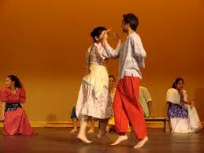
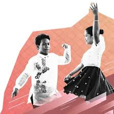
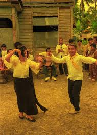
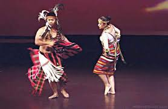

The Kuratsa is a traditional Filipino courtship dance popular in Ilocano and Visayan regions. It is usually performed during festivals, weddings, and community celebrations. The dance portrays a playful chase between a man and a woman, symbolizing admiration, love, and respect. Unlike the more energetic folk dances, the Kuratsa is graceful, light, and expressive, showcasing Filipino charm and confidence in courtship.

The dance imitates traditional Filipino courtship through playful gestures and movements.
Kuratsa features smooth steps, elegant arm motions, and well-coordinated partner interactions.
A staple dance during festivals and weddings across Ilocano communities.


